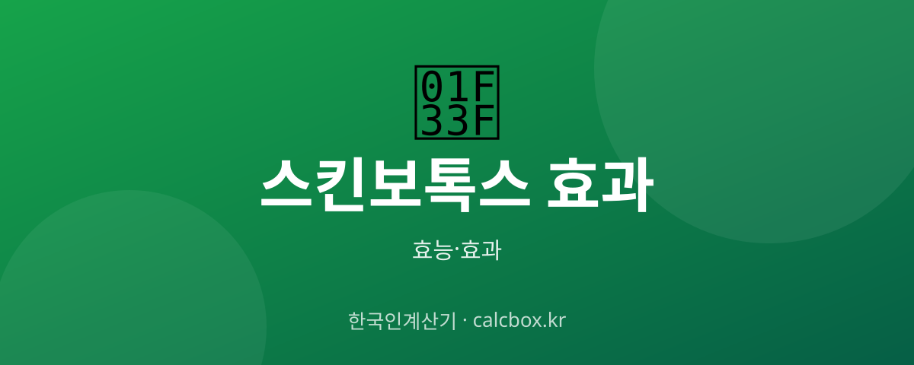

스킨보톡스 효과 — 모공·피부결 개선 시술의 원리와 유지 기간
표정 잡는 보톡스와 다른 스킨보톡스. 피부 표면에 얕게 놓는 이 시술이 모공·결에 어떤 도움을 주는지 정리했습니다.

스킨보톡스 개요 — 어떤 것인가요?
스킨보톡스는 보툴리눔 톡신을 피부 얕은 층에 미세하게 여러 곳 주입하는 시술입니다. 근육을 크게 마비시키는 일반 보톡스와 달리, 피지·모공·피부결 개선을 주 목적으로 합니다.
스킨보톡스 주요 효능·효과
- 모공·피지 개선 — 피지 분비·모공 관리에 도움을 줄 수 있어 유분이 많은 피부에 활용됩니다.
- 잔주름·결 개선 — 표면 잔주름과 피부결 매끈함 개선을 기대합니다.
- 자연스러움 — 표정을 크게 굳히지 않으면서 피부 톤·결 관리를 목표로 합니다.
섭취·사용 방법과 권장량
효과는 시술 후 며칠~2주에 걸쳐 나타나며 유지 기간은 보통 3~4개월 정도입니다. 주기적 관리로 상태를 유지합니다.
주의사항·부작용
일시적 붉은기·따끔거림이 있을 수 있습니다. 용량·깊이가 중요하므로 반드시 전문의 상담·시술이 필요합니다. 임산부·수유부·신경근 질환자는 시술이 제한됩니다.
자주 묻는 질문 (FAQ)
Q. 스킨보톡스와 일반 보톡스는 뭐가 다른가요?
일반 보톡스는 표정 근육을 이완해 주름을 펴고, 스킨보톡스는 피부 얕은 층에 미세 주입해 모공·피지·결 개선을 목표로 합니다. 놓는 깊이와 목적이 다릅니다.
Q. 스킨보톡스 효과는 얼마나 가나요?
보통 3~4개월 정도 유지되며 개인차가 있습니다. 상태 유지를 위해 주기적으로 시술받는 경우가 많습니다.
Q. 스킨보톡스는 표정이 굳나요?
얕게 소량 주입해 일반 보톡스보다 표정 제한이 적은 편입니다. 다만 용량·부위에 따라 다르니 전문의와 상담해 조절해야 합니다.